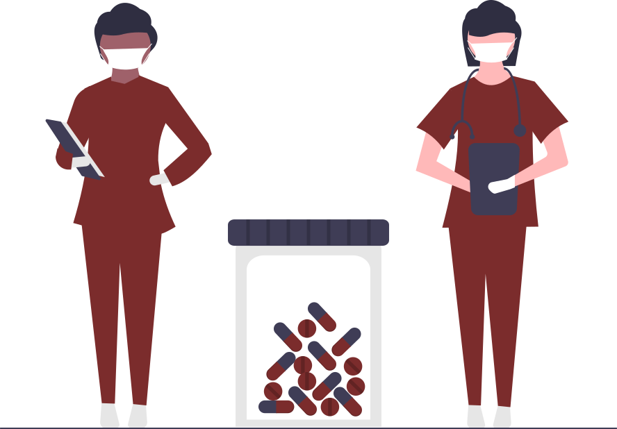

On the Go Diagnosis
- Medical Diagnosis Chatbot enables the patient to perform on-the-go diagnosis.
- Patients can get health updates at any time during the day.
- It gives an immediate result of the preliminary diagnosis based on the patient's symptoms bringing regular medical checkups at fingertips.
PDF Report of Diagnosis
- It is an exclusive feature that helps the user to generate a PDF document of the diagnosis.
- These reports assist doctors in giving efficient treatments based on the preliminary diagnostic reports.
- These reports enable patients to skip long hours at a clinic and avoid long queues.
Indication of Emergency Treatment requirement
- Our app displays red flags immediately on your phone, giving you an emergency indication of seeking medical treatment urgently or in the coming days.
- These red flags give the patient an emergency indication of seeking medical treatment urgently or in the coming days.
- The emergency indicator in the app also suggests you a specialist based on the type and severity of the disease.
